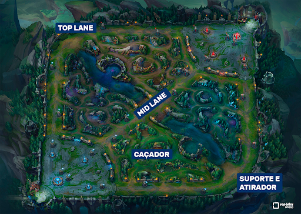
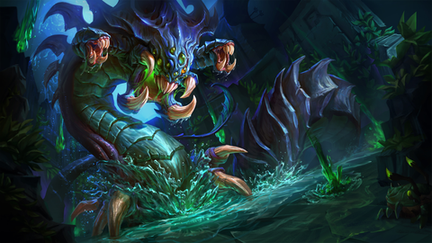
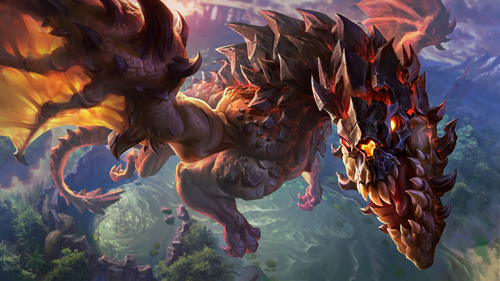

League of legends popularmente conhecido como LoL, é um jogo para PC de estratégia 5x5, no qual o objetivo é destruir o nexus inimigo. Você pode escolher entre mais de 150 incriveís campeões.
Para destruir o nexus inimigo e proteger o seu, é preciso de trabalho em equipe para juntar recursos, destruir torres e inibidores até a base adversária e conseguir o tão esperado "Vitória" na tela.
Esses são os monstros épicos de Summoners rift:
BARÃO NA'SHOR: O Barão Na’Shor é o monstro mais poderoso da selva. Ele concede Dano de Ataque e Poder de Habilidade adicionais, Retorno rápido e um grande aumento no poder de tropas próximas para a equipe que o derrotar.
Esses são os monstros épicos de Summoners rift:
DRAGÕES: Dragões são monstros poderosos que concedem efeitos exclusivos dependendo do dragão que sua equipe derrotar. Existem quatro Dragões Elementais e um Dragão Ancião.
Em League of Legends existem 5 poscições sendo elas: toplaner, caçador, midlaner, atirador e suporte
Toplaner/Rota superior: Campeões na rota superior são os lutadores durões e solitários da equipe. O trabalho deles é proteger a própria rota e focar seu dano nos membros mais fortes da equipe inimiga.
Jungler/Caçador: Caçadores vivem pela caça. Espreitando entre as rotas com furtividade e habilidade, eles ficam atentos aos monstros da selva mais importantes e avançam no momento que o oponente baixar a guarda.
midlaner/Rota do meio: Campeões da rota do meio são aqueles que possuem alto dano explosivo e podem fazer de tudo, sejam sozinhos ou em equipe. Para eles, o combate é uma dança perigosa, e nela devem sempre buscar oportunidades para superar seu oponente.
ADCarry/Atirador: Campeões da rota inferior são a fonte preciosa de dano de cada equipe e precisam ser protegidos no início de jogo até que acumulem ouro e experiência o suficiente para carregar toda a equipe até a vitória.
Suporte: Campeões Suporte são os guardiões da equipe. Eles ajudam a manter seus aliados vivos e focam primordialmente em armar abates, protegendo seu parceiro na rota inferior até que fique mais forte.